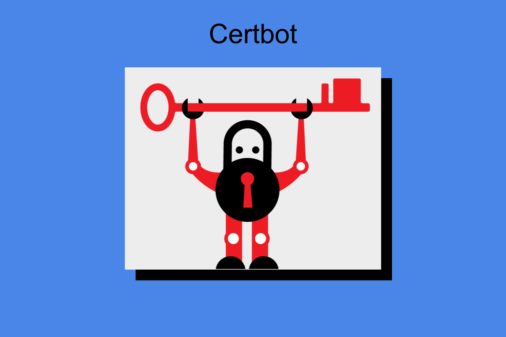

jonathanarellano.xyz
Using Certbot to obtain a HTTPS conection.
Simple guide
Certbot is a program provided by Electronic Frontier Foundation that allows anyone to the option to have a their websote a https certificate
In this guide I will explain how to run Certbot on a debian server with nginx installled. I'm using Debian linux distro for my webserver server and my os. This guide can also apply to ubuntu servers but will require some extra steps.
Start by running your terminal and log in into your webpage's server and enter your password
root@yourdomain
The following comand will install a configuration of certbot works with nginx. Might take a while so get some coffee in the meantime.
apt install python3-certbot-nginx
Once installation is finished. Run certbot with the following command
certbot --nginx
After running the command it will ask for your email. you can skips thgis by following the commands on display. This https certificates only last 3 months after expering you will have to renew it again. You can fortunalty renew it as much time as you like.
That's all.